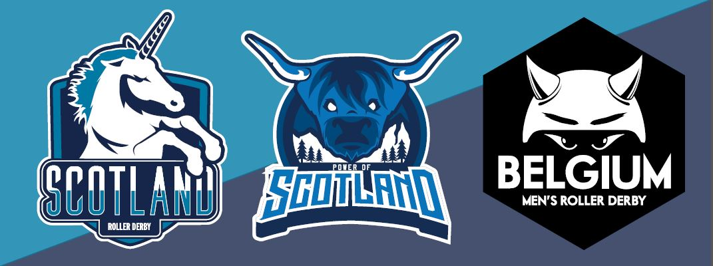

Seeing in the New: National Teams in Dundee.
This weekend sees a double-dose of National Teams action for those in Scotland, as Dundee hosts a combined event with Team Scotland Roller Derby and Power of Scotland both on track.

First up, the Training Team for Team Scotland will be holding a Black v White bout, competing against themselves as part of the selection process for the new Team Scotland. After playing as two teams last weekend in Belgium (and winning both games), all of the skaters will be at their best, and bringing you (by definition), the highest level roller derby in Scotland.
Secondly, the Power of Scotland roster from the 2016 Men's World Cup will be playing their swansong bout, against Team Belgium Men's Roller Derby. Symbolically, this is their passing of the torch to the new Power of Scotland training team, who are currently undergoing the selection process after their tryouts in January.
With the close connection between the National Teams, we were delighted to be able to talk with Rosie Peacock (PoS 2016 LUM/Assistant Coach, TS 2017/8 Head Coach) and Laura "Milky" Liston (PoS 2016 Coach, member of TS 2017/8 Training Team) about things. Between them, the two were selected to Captain the Team Scotland rosters in Belgium, so they have a great feel for the team.
First question, then: How did it feel to be selected as a Captain for the bouts last weekend?
Rosie: So, Milky captained both in the end because I had too much caffeine and got super radge... Me and Milks were the only two who were nominated, but it was good the team trusted us to do the thing.
Laura: It was lovely knowing some of the team had nominated us, and it was such an amazing opportunity to Captain the squad, but yeah, we were the two nominated haha
So, following up on that: Team Scotland won both their games, with both rosters against Belgium. How do you feel the games went - what are you happiest about, and is there anything you might work on?
Rosie: I think outer defence side walls are really tight and fluid and adaptive; I'd love to work more on our offer credit and jammer pairings, but that's something we can't progress too much further until we have our final squad and definitely establish roles... I need to keep my temper and not drink red bull when pmsing 😂
Laura: I really loved some of the bonds and partnerships we starting building on track, which I think were really apparent throughout the day. I'm looking forward to seeing how they develop in the final squad. Both of the games brought different challenges so it was great to see how we adapted to the change in gameplay style.
And moving to this weekend: obviously we can't talk too much about selection itself, but clearly everyone there is hoping to make the final selection - do you see changes in both your own performance (and gelling) and your teammates already at this point?
Laura: Oh definitely. The opportunity to skate with so many high level skaters has really helped strengthen my skating on a personal level. We've been lucky enough to have Belgium and Cardiff to gel as a team in a competitive environment, and I think both have made a really noticeable improvement to our performances as a team together.
Both of you have strong connections with Power of Scotland, especially the 2016 Squad who are playing as well - against Belgium! - we know the team are treating this as a "sending off" of the old team, but will a tiny tear be in your eyes to see them playing together for the last time?
Laura: Hah! I think I got all my emotions out in Calgary when the whole squad was there. It'll be great to see the guys playing together again but I'm looking forward to seeing what our new squad will look like, and so excited about the future of PoS.
Rosie: I'm looking so forward to playing the best sport in the world, with the best group of humans I've had the pleasure to know x
The doors open for the double header at 11:30, Saturday 11th February, at the Dundee International Sports Centre.
Tickets are £6 in advance (from Brown Paper Tickets), £8 on the door. (Tickets at: http://www.brownpapertickets.com/event/2794252 )